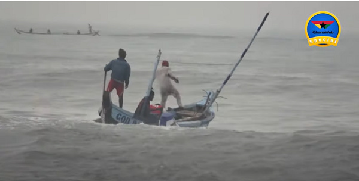

Photos Of Tourist Activities

Boat Trips
Explore the vastness of Lake Volta with a scenic boat trip. Enjoy the tranquility and discover hidden coves.

Fishing
Test your fishing skills in the abundant waters of Lake Volta. Catch tilapia, perch, and other local species.

Hiking
Explore the hills and forests around the lake with invigorating hikes. Discover waterfalls and panoramic views.
Birdwatching
Lake Volta is a haven for birdwatchers. Spot a variety of bird species amidst the lush vegetation.